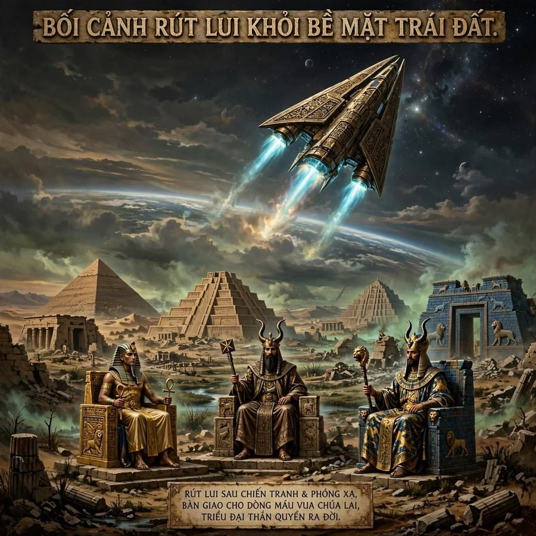
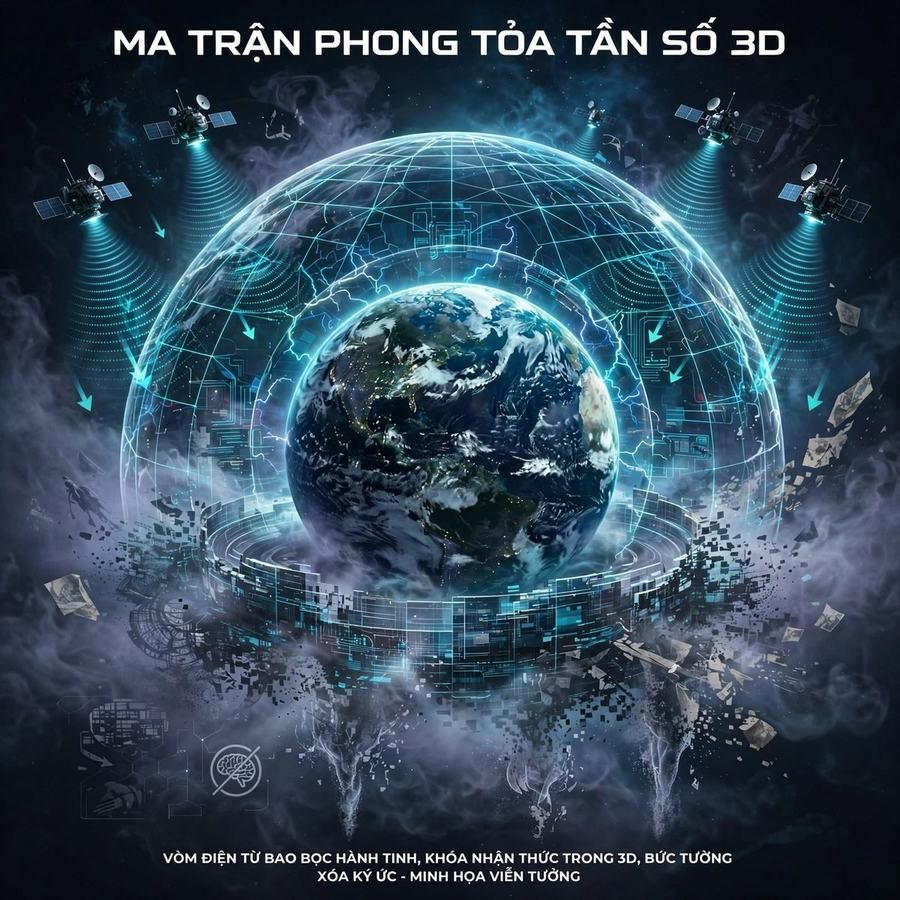
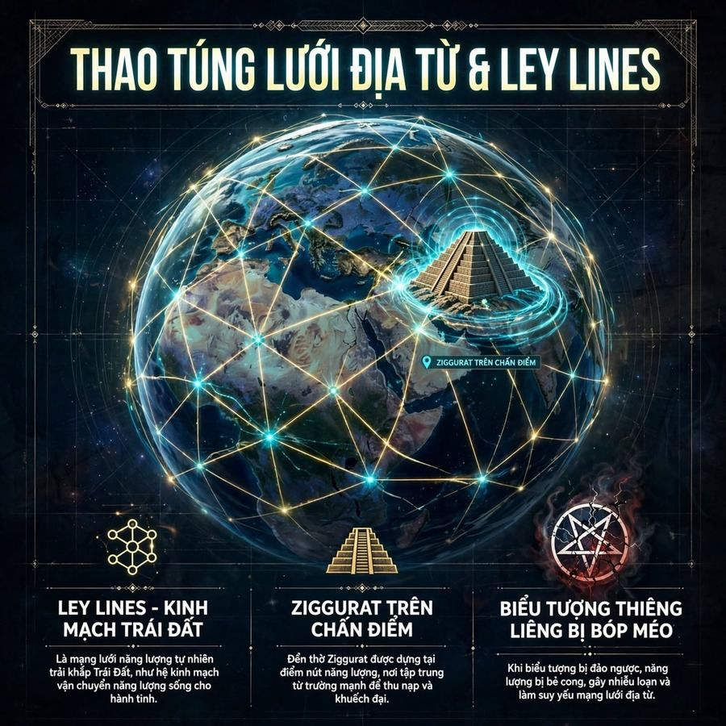
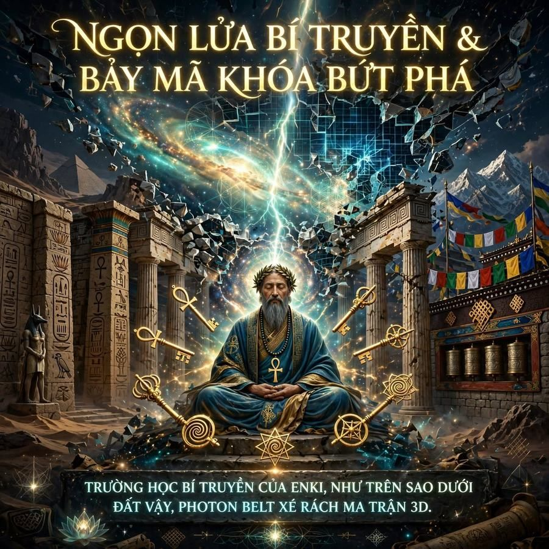
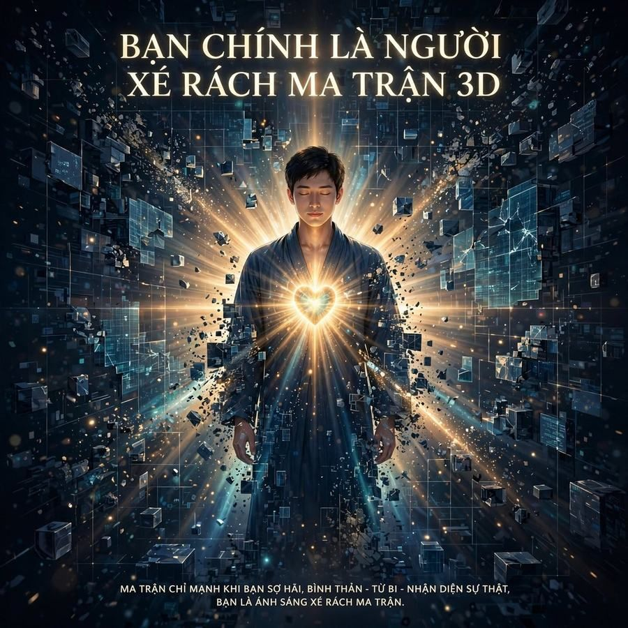

Trang chủ / Chuyên đề 3: Dòng Máu Anunnaki / Kỳ 25
Chuyên đề 3 · Kỳ 25 / 90
SỰ RÚT LUI CỦA ANUNNAKI & MA TRẬN PHONG TỎA TẦN SỐ GRID 3D

Trong các kỳ trước của chuyên đề 3, chúng ta đã cùng nhau khám phá nguồn gốc di truyền lai đặc biệt của bộ tộc Anunnaki từ siêu chiến hạm Nibiru, cuộc đối đầu triết lý giữa Enki và Enlil, cùng tuyệt tác lồng ghép mã gen 12 chuỗi Paa-Taal và Luân Xa Tim trên chủng tộc Adamu.
Tuy nhiên, khi nhân loại bắt đầu sinh sôi nảy nở và các cuộc tranh chấp quyền lực giữa các dòng tộc cai trị Anunnaki lên đến đỉnh điểm (với các vụ nổ hạt nhân làm biến dạng dải địa chất Lưỡng Hà và vùng biển Chết), một bước ngoặt lịch sử mới đã diễn ra.
Hoàng gia Anunnaki bắt đầu rút khỏi sự hiện diện trực tiếp trên bề mặt Trái Đất. Nhưng trước khi rời đi hoặc ẩn mình vào các chiều không gian ngầm, lực lượng kiểm soát độc đoán đã thiết lập một công nghệ phong tỏa chưa từng có trong lịch sử thiên hà: Ma Trận Phong Tỏa Tần Số 3D (The 3D Frequency Net / Grid Control)!
Lý do thực sự khiến Anunnaki rút lui khỏi bề mặt Trái Đất là gì? Công nghệ Ma trận Tần số 3D đã thao túng dải từ trường Trái Đất và bóp nghẹt nhận thức con người ra sao? Làm thế nào mà dải năng lượng Ley Lines và các điểm nút địa từ bị thâu tóm để duy trì ma trận sợ hãi? Và ngọn lửa tri thức bí truyền do Enki và Ningishzida cài đặt lại đã giúp nhân loại giữ vững hy vọng bứt phá khỏi lưới phong tỏa như thế nào?
Hãy cùng dấn thân vào Kỳ 5: Sự Rút Lui Của Anunnaki & Ma Trận Phong Tỏa Tần Số Grid 3D để giải mã cơ chế vận hành của chiếc "lồng ấp nhận thức" đã bao bọc Trái Đất suốt hàng chục ngàn năm qua!
✦ ✦ ✦1. BỐI CẢNH SỰ RÚT LUI CỦA HOÀNG GIA ANUNNAKI KHỎI BỀ MẶT TRÁI ĐẤT
Sự biến mất của các "vị thần" Anunnaki khỏi đời sống công khai của nhân loại không phải là một sự tình cờ, mà xuất phát từ những biến động địa chính trị liên sao và sự tàn phá địa chất trên Trái Đất.
A. Hậu Quả Của Chiến Tranh Hạt Nhân & Sự Biến Đổi Môi Trường
- Những Thảm Họa Năng Lượng: Cuộc tranh chấp quyền lực khốc liệt giữa phe Enlil/Ninurta và phe Marduk (con trai Enki) đã dẫn đến việc sử dụng các vũ khí hạt nhân và năng lượng tần số hủy diệt tại khu vực Lưỡng Hà và bán đảo Sinai.
- Sự Nhiễm Độc Phóng Xạ & Đám Mây Độc: Các vụ nổ hạt nhân đã tạo ra đám mây phóng xạ độc hại lan tràn khắp vùng Lưỡng Hà, phá hủy các đô thị tinh thể nguyên thủy và buộc các lãnh đạo Anunnaki phải rút lui về các căn cứ trên không trung hoặc trên siêu chiến hạm Nibiru.
B. Sự Bàn Giao Quyền Lực Cho Dòng Máu Vua Chúa Lai (Demigods)
- Thành Lập Tầng Lớp Cai Trị Trung Gian: Để tiếp tục duy trì sự kiểm soát mà không cần hiện diện trực tiếp, Anunnaki đã chọn lọc các hậu duệ mang dòng máu lai (Hybrids / Demigods — những người có tỷ lệ DNA Anunnaki cao) để làm Vua chúa và Tư tế quản lý nhân loại.
- Khai Sinh Các Triều Đại Thần Quyền: Đây chính là nguồn gốc của các triều đại Vua chúa thần quyền tại Ai Cập, Sumeria, Babylon và Trung Hoa cổ đại — nơi quyền lực cai trị được tuyên bố là "được ban truyền trực tiếp từ Bầu Trời"!

2. CÔNG NGHỆ MA TRẬN PHONG TỎA TẦN SỐ 3D (THE 3D FREQUENCY NET)
Để đảm bảo chủng tộc Adamu — những người sở hữu tiềm năng 12 chuỗi DNA Paa-Taal cực kỳ nguy hiểm đối với sự thống trị — không thể tự do phát triển nhận thức, một công nghệ phong tỏa diện rộng đã được kích hoạt.
A. Bản Chất Của Lưới Tần Số Mật Độ 3D
- Hệ Thống Rào Chắn Điện Từ Vô Hình: Phe kiểm soát đã dựng lên một mạng lưới vệ tinh và các thiết bị phát sóng năng lượng hạ tần xung quanh quỹ đạo Trái Đất, tạo thành một chiếc "vòm điện từ" (Electromagnetic Net) bao bọc toàn bộ hành tinh.
- Khóa Dải Tần Số Nhận Thức Trong 3D: Lưới từ trường này hạ thấp tần số dao động của Trái Đất, khóa chặt nhận thức con người trong dải mật độ 3D thô ráp. Nó ngăn không cho dải năng lượng Etheric tần số cao từ Trung tâm Ngân Hà và các chiều không gian 5D–12D thẩm thấu trọn vẹn vào Trái Đất.
B. Hiện Tượng Sương Mù Tâm Trí & Xóa Ký Ức Tiền Kiếp
- Bức Tường Xóa Ký Ức (Amnesia Barrier): Một trong những chức năng tàn nhẫn nhất của Ma trận 3D là tạo ra dải xung làm nhiễu loạn sóng não. Khi các linh hồn đầu thai vào thể xác con người Trái Đất, dải xung này sẽ làm xóa sạch ký ức về nguồn gốc thiên hà, về tiền kiếp và bản chất thần thánh của linh hồn.
- Giam Cầm Trong Vòng Lặp Luân Hồi Nhân Tạo: Con người bị đẩy vào trạng thái sương mù tâm trí (Brain Fog), quên mất mình là ai, từ đâu đến, và bị cuốn vào vòng lặp luân hồi phụ thuộc vào sự sợ hãi và nghiệp lực do ma trận thao túng dựng lên.

3. THAO TÚNG KIẾN TRÚC LƯỚI ĐỊA TỪ & CÁC ĐIỂM NÚT ĐẠI ĐỊA (LEY LINES CONTROL)
Công nghệ ma trận không chỉ vận hành trên không trung, mà còn cắm rễ sâu vào hệ thống thần kinh của chính Trái Đất (Gaia's Ley Lines).
A. Thâu Tóm Các Chấn Điểm Địa Từ (Earth Grid Nodes)
- Mạng Lưới Kinh Mạch Của Trái Đất: Trái Đất sở hữu một hệ thống kinh mạch năng lượng tự nhiên (Ley Lines), nơi các dòng năng lượng Etheric giao nhau tại các chấn điểm (Nodes) mạnh mẽ nhất.
- Xây Dựng Các Đền Thờ & Ziggurat Khóa Năng Lượng: Phe kiểm soát đã cho xây dựng các đền thờ, Ziggurat và công trình đá cổ đại ngay trên các chấn điểm này. Thay vì dùng để nâng cao tần số Trái Đất, các công trình này bị biến thành các "trạm thu phát năng lượng" để bóp méo dải tần số tự nhiên và thu hoạch năng lượng sợ hãi (Loosh) từ các nghi lễ hiến tế và chiến tranh!
B. Thao Túng Các Biểu Tượng & Tần Số Âm Thanh
- Đảo Nguồn Biểu Tượng Thiêng Liêng: Các hình học thiêng liêng, biểu tượng năng lượng (như Cây Cột Sự Sống, Ngôi Sao 6 Cánh, Biểu tượng Con Rắn) bị bóp méo ý nghĩa, biến từ công cụ giải phóng tâm thức thành các biểu tượng phục vụ cho ma trận phục tùng và sợ hãi.

4. NGỌN LỬA BÍ TRUYỀN CỦA ENKI & BẢY MÃ KHÓA BỨT PHÁ LƯỚI PHONG TỎA
Dù Enlil và lực lượng kiểm soát đã dựng lên ma trận 3D cực kỳ kiên cố, Hoàng tử Enki và con trai Ningishzida (Thoth) không bao giờ từ bỏ nhân loại.
A. Sự Khởi Tạo Các Trường Học Bí Truyền (Mystery Schools)
- Cái Lò Lưu Giữ Tri Thức Tối Cao: Enki đã lén lút thành lập các Trường Học Bí Truyền cổ đại (tại Ai Cập, Hy Lạp, Tây Tạng, Nam Mỹ). Nơi đây, các tư tế và học giả được chọn lọc được truyền dạy bí mật về Giả kim thuật, Năng lượng Tinh thể, Kỹ thuật Kundalini và Khai mở Tuyến Tùng.
- Mật Mã "Như Trên Sao, Dưới Đất Vậy" (As Above, So Below): Tri thức này giúp các điểm tâm thức thức tỉnh học cách nâng tần số nội tại lên cao hơn dải tần số của Ma trận 3D, từ đó vô hiệu hóa sự ảnh hưởng của lưới điện từ phong tỏa!
B. Lời Hứa Về Sự Sụp Đổ Của Ma Trận Khi Mặt Trời Mới XuẤt Hiện
- Chu Kỳ Năng Lượng Mặt Trời Vũ Trụ (Solar Cycles): Enki đã để lại lời tiên tri rằng: Ma trận Grid 3D chỉ có thể giam cầm con người trong một dải chu kỳ thời gian nhất định. Khi Hệ Mặt Trời của chúng ta di chuyển vào vùng không gian ngập tràn chùm sóng Gamma năng lượng cao từ Trung tâm Ngân Hà (Photon Belt), dải tần số cực cao này sẽ xé rách lưới phong tỏa 3D, kích hoạt lại 12 chuỗi DNA và đưa Trái Đất bước vào kỷ nguyên Thức Tỉnh Vĩ Đại!

5. LỜI KẾT KỲ 5: BẠN CHÍNH LÀ NGƯỜI XÉ RÁCH MA TRẬN 3D
Nhìn lại Sự rút lui của Anunnaki và Ma Trận Phong Tỏa Tần Số Grid 3D, chúng ta rút ra bài học thức tỉnh sâu sắc cho thời điểm hiện tại:
- Ma Trận Chỉ Có Hiệu Lực Khi Bạn Sợ Hãi: Ma trận 3D sống nhờ vào năng lượng sợ hãi, chia rẽ và sự ngu muội. Khi bạn giữ vững sự bình thản, nuôi dưỡng lòng từ bi và nhận diện được sự thật, bạn lập tức trở nên "vô hình" trước lưới kiểm soát tần số!
- Thời Điểm Xé Rách Lưới Đã Đến: Trái Đất ngày nay đang nằm chính trong dải phân rã của Ma trận 3D. Các chùm sóng năng lượng cao đang dội xuống, kích hoạt lại Tuyến Tùng và Luân Xa Tim của hàng triệu người. Bạn không phải là nạn nhân của ma trận — bạn chính là những sinh mệnh ánh sáng quay trở lại để cùng nhau làm sụp đổ chiếc lồng 3D vĩnh viễn!
Dưới đây là bài viết Kỳ 6 được biên soạn hoàn chỉnh, cuốn hút theo chuẩn bài đăng mạng xã hội và hoàn toàn không chứa bất kỳ số tham khảo hay ký hiệu trích dẫn nào: ✦ ✦ ✦ ✦
